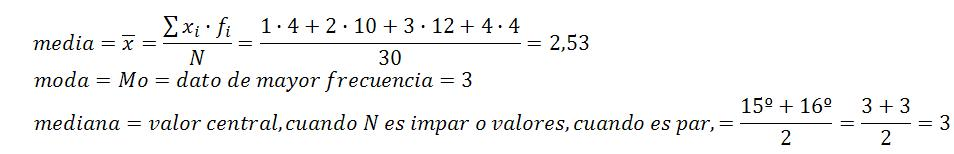

ESTADÍSTICA DESCRIPTIVA
En la estadística descriptiva se
-
recopilan,
-
clasifican,
-
organizan,
-
resumen ya sea mediante tablas o graficas,
-
y se analizan e interpretan los datos para lograr describir las variables de interés.
Caso de estudio
Queremos estudiar el número de móviles que poseen las familias de lo alumnos de un instituto, si tener que preguntar a todos ellos.
¿Qué pasos hemos de seguir?
Recopilamos información , preguntando a 30 alumnos obteniendo los siguientes resultados:
2 3 1 3 2 4 3 2 3 2 3 2 1 3 4 3 2 2 4 3 1 3 2 2 3 2 3 1 4 3
Presentadosde ésta manera no son fácil de manejar. Hagamos una tabla, donde xi, representa los diferentes resultados, fi es la frecuencia(nº de veces que aparece cada dato), fri es la frecuencia relativa (fi:N, siendo N=total de datos o resultados) y fai es la frecuencia acumulada.
| xi | fi | fri | fai |
| 1 | 4 | 4:30=0,13 | 4 |
| 2 | 10 | 10:3=0,33 | 14 |
| 3 | 12 | 12:30=0,4 | 26 |
| 4 | 4 | 4:30=0,13 | 3 |
| Total | N=30 |
Éstos datos se pueden representar en forma de diagrama de sectores o como el siguiente diagrama de barras:

Si a la pregunta de cuántos móviles tiene cada familia, tuviésemos que contestar con un único valor,calcularíamos los parámetros de centralización, media, moda y mediana.

Podríamos contestar que, de media 2,53, o contestar que 3 móviles,cercano a la media y que es el va que más se repite.